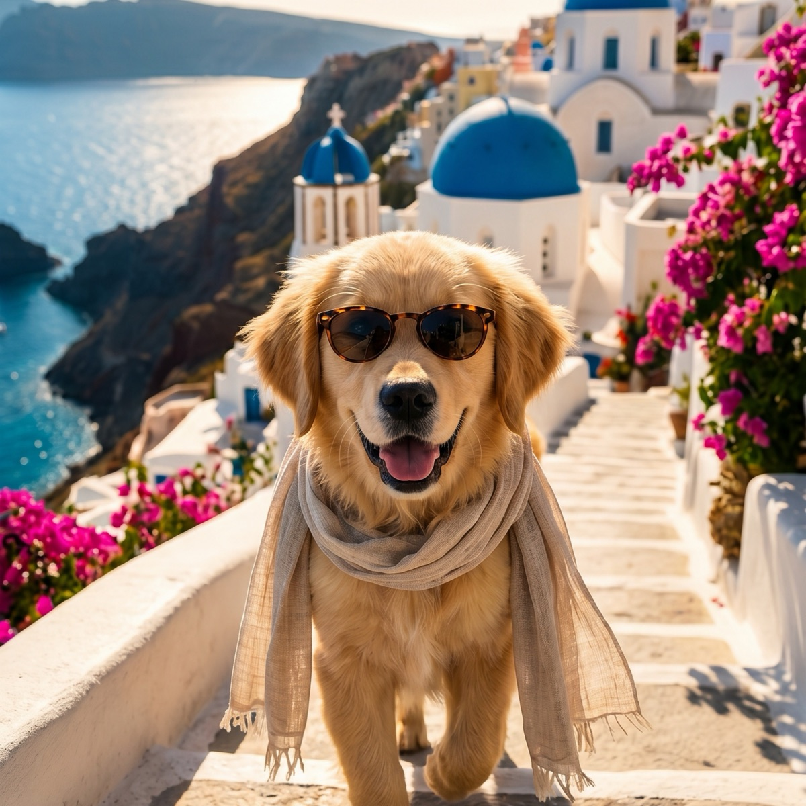

The Summer Dog Care Checklist
Summer is the season dogs were built to love: long evenings, open windows, and trips to the water. It is also the season that asks the most of you as an owner. Heat, hot pavement, bugs, and water all bring risks that are easy to manage once you have a routine. Here is the whole checklist in one place.
Keep this handy from the first warm week through the last. None of it is complicated, and most of it becomes second nature after a few days. The trick is to make these checks automatic so the hot afternoons never catch you off guard.
Keep the water flowing
Hydration is the foundation of every other summer precaution. Dogs cool themselves mostly by panting, and panting burns through water fast.
- Refill the indoor bowl with cool, fresh water more than once a day.
- Carry a collapsible bowl and a bottle on every walk or outing.
- Add a shaded outdoor water station if your dog spends time in the yard.
- Watch for thick, tacky drool or a dry-looking nose and gums, which can signal your dog is falling behind.

Time walks around the heat and the pavement
When you walk matters more than how far you walk. The American Kennel Club recommends choosing the cooler edges of the day for exercise and giving your dog plenty of shade, water, and rest breaks when it is hot.
- Favor early morning and late evening over the midday peak.
- Do the seven-second test before stepping off: press the back of your hand to the pavement, and if you cannot hold it for seven seconds, it is too hot for paws.
- Stick to grass and shaded paths when the asphalt is baking.
- Shorten the route on humid days, when panting cannot shed heat as well.
Stock the shade and cooling gear
A dog cannot make its own cool spot, so give it a few. Make sure there is always a shaded, breezy place to retreat to, indoors or out, and consider a cooling mat for the hottest stretch of the day. A little gear goes a long way when the forecast climbs.
- A cooling mat or a damp towel for the dog to lie on.
- A fan aimed at a resting spot to speed evaporation.
- Frozen treats or ice cubes in the water bowl for a midday cool-down.
- Access to air conditioning on the most extreme days.
Never leave a dog in a parked car
This is the rule with zero exceptions. The American Veterinary Medical Association warns that a parked car heats up fast even on a mild day, and cracking the windows barely slows it down. The interior can reach deadly temperatures in minutes. If your dog cannot come inside with you, leave it home where it is safe and comfortable.
Skip the summer shave
It feels logical to shave a fluffy dog down for summer, but for double-coated breeds it backfires. The American Kennel Club explains that a double coat insulates against heat as well as cold, trapping a layer of air that helps the dog regulate its temperature. Shaving removes that protection, raises the heatstroke risk, and can leave the coat growing back patchy. Instead:
- Brush regularly to clear dead undercoat and improve air circulation.
- Leave the guard hairs in place, since they also shield skin from sunburn.
- Ask a groomer about a tidy trim rather than a full shave for non-double-coated breeds.
Protect the paws
Paw pads take a beating in summer, between hot surfaces and rough trails. Beyond the seven-second test, check the pads after outings for redness, blisters, or peeling. Rinse off sand, salt, and lawn chemicals when you get home, and keep walks on cooler surfaces during heat waves. Booties are an option for dogs that tolerate them, especially on long midday outings.
Make water safety a habit
Swimming is one of the best ways for a dog to cool off, but open water deserves respect. The ASPCA advises never leaving a dog unsupervised near water, since not every dog is a strong swimmer.
- Use a canine life jacket for boating, lakes, and strong currents.
- Introduce swimming gradually and stay within reach.
- Rinse off pool chemicals and lake water after a swim.
- Offer fresh water so your dog is not tempted to gulp pool or lake water.
Stay ahead of fleas, ticks, and mosquitoes
Warm months are peak season for parasites. Fleas and ticks thrive in summer, and mosquitoes spread heartworm. Talk to your veterinarian about the right year-round or seasonal preventives for your region, check your dog for ticks after walks in tall grass or woods, and keep the yard trimmed to cut down on hiding spots.
Know the signs of heat distress
Even with a great routine, you should be able to spot trouble fast. Early heat distress shows up as heavy, frantic panting that does not slow with rest, thick drool, bright red gums, and a dog that lags or seeks shade with urgency. Staggering, vomiting, confusion, or collapse mean it is an emergency: move your dog to a cool spot, offer small sips of cool water, wet the body, and call your vet right away. When in doubt, cool first and call on the way.
Let the forecast do the planning
Most of this checklist comes down to one habit: glancing at the day's heat before you head out. A humid 88 degree day can be harder on a dog than a dry 95, so the "feels like" number matters as much as the temperature. With WeatherPets, your own dog delivers the day's high and a Live Activity that tracks conditions in real time, which turns "I should check first" into something you actually do every morning. Plan the walk window around the feels-like, and the rest of the list falls into place.
Gear that helps: a cooling mat and a pet water fountain make hot days easier on your dog. See our full picks for cooling mats, cooling vests, and elevated beds.
WeatherPets is an Amazon Associate and may earn from qualifying purchases, at no extra cost to you.